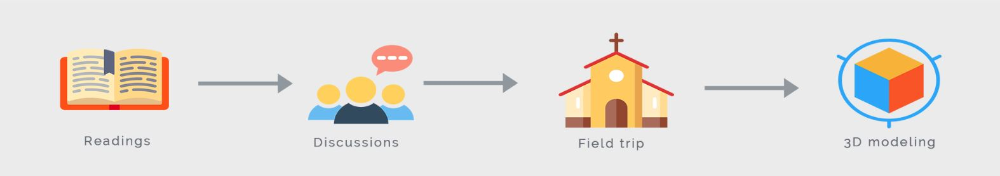
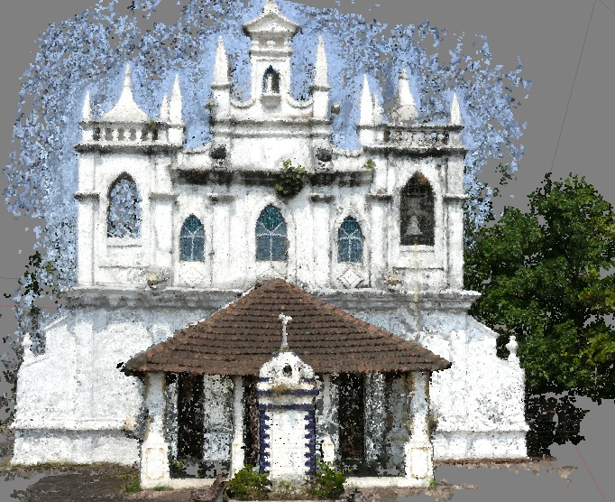
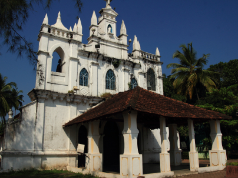
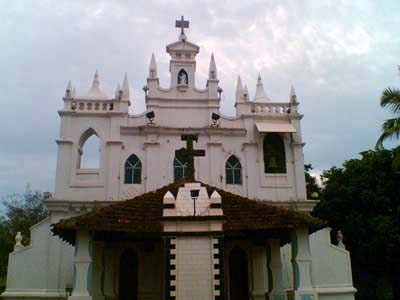

This project introduced me to Product Design and UX concepts. I studied Donald Norman's Design of Everyday Things and Frederick Brooks' Design of Design. Research articles on good design were reviewed. Weekly discussions with my supervisor gave me an oppportunity to do assignments like 'Design of Android Phone vs Apple Phone', 'Find flaws in product X', etc. Towards the end of the project, I learnt of various ways to make 3D models. To contribute to the conservation of heritage sites, I went on field trips where St Jacinto's Church was studied. I made a 3D model of this 400 year old monument using photogrammetry.
Supervisor: Dr Geetha B, at BITS Pilani, India
Duration: 3.5 months
Link: Project Report
PROCESS
Photogrammetry can be defined as a technique that uses photography for mapping the measurements and shape of objects. The underlying concept of Photogrammetry is aligning the photographs by locating common points and matching their positions. A point cloud is generated as more points are found and equalled. Consequently, the position of each photograph’s shoot can be determined and the model is reconstructed. During the field trip to St Jacinto's Church, I captured photos of the monument from various angles, keeping a 40-60% overlap between consecutive photos.
  